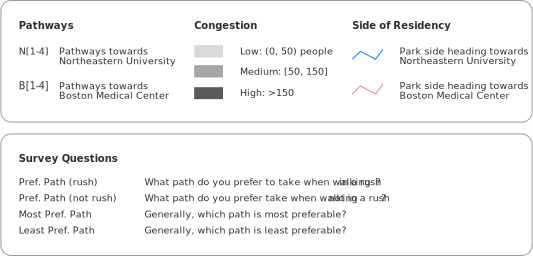
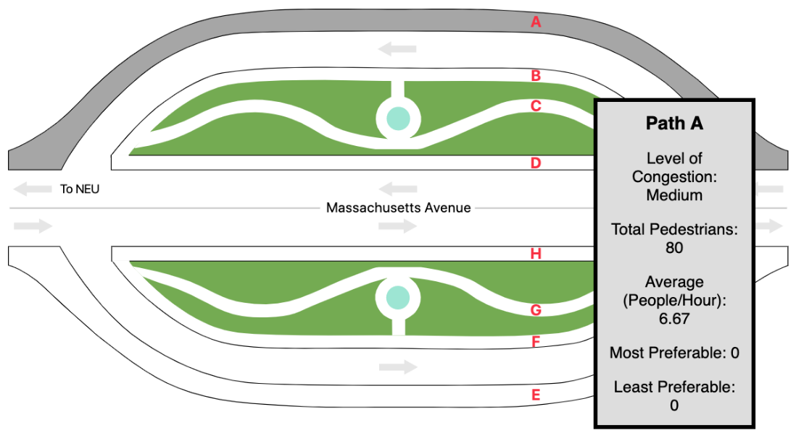
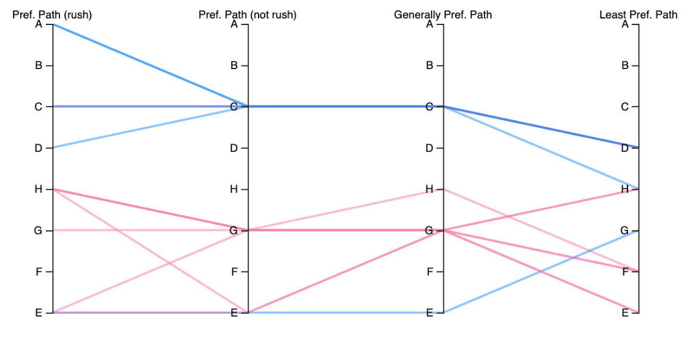
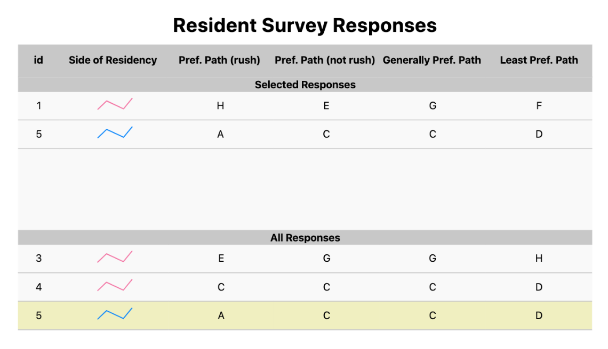
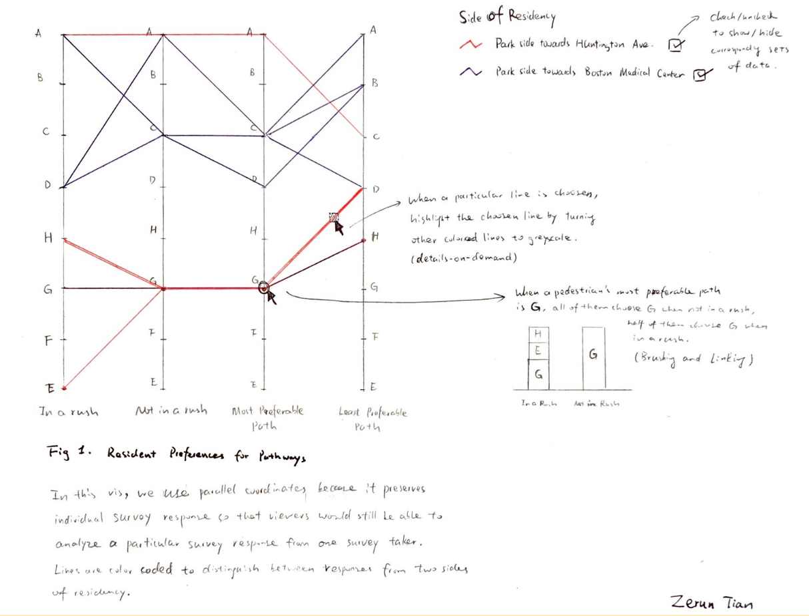
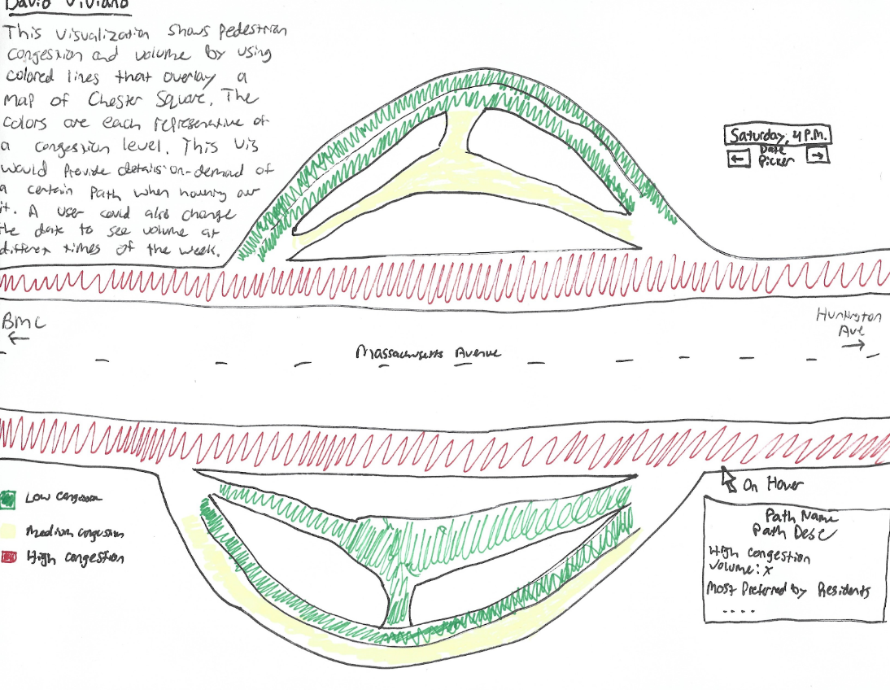

David Viviano, Zerun Tian, Nikita Goyal, Kabir Dugal
Service-Learning Course Project as part of DS 4200: Information Presentation and Visualization, taught by Prof. Cody Dunne, Data Visualization @ Khoury, Northeastern University.
The Chester Square Park Neighborhood Association has asked us to create a visualization that is focused on the pedestrians. They have noticed that pedestrians have opted to use the pathways that are closest to the main road, as opposed to the pathways that go through the park, due to reasons such as convenience, safety, etc. We were asked to emphasize this problem in our visualizations. We anticipate that the primary user of our visualization will be the Chester Square Neighborhood Association members. We also want it to be an entry point for more professional users, such as policy makers. Our visualization should be simple enough to gain local support but advanced enough to justify professional interest.
Chester Square Park Pathways
Resident Survey Responses (Parallel Coordinates Chart)
Legend
Resident Survey Responses (Table)
Our visualization consists of three parts: a highlightable map of the Chester Square neighborhood, a parallel coordinates chart, and a table; all three are linked via the table, and are based off of data collected via observation and/or survey results. The primary result of our survey data is the parallel coordinates chart connected to the table below, showing the different answers provided by resident respondents to the survey. This was the chosen method to display this data because of simplicity of design and the way in which one could track each survey response and how each path they chose differed under different circumstances. One can interact with this by selecting a subset of the total values in a given column to see different responses to the survey at the same time and better track the choices of each respondent. Given the relatively small nature of the dataset, all the responses were presented in the table below the parallel coordinates chart. One can interact with this by clicking a row, representing a singular response, which then highlights the paths shown in that response on the adjacent map.
Final visualization screenshots below.
  We worked with 2 data sets to create the above visualizations - data from observations of pedestrians in Chester Square Park, and data from a survey sent to residents of the neighborhood. Our first data set is observation data that was collected by watching and recording the start locations, end locations, and the chosen path of pedestrians on-site. This data is meant to provide information on the travel tendencies of everyday commuters. Our second data set comes from a survey that we sent to the Chester Square Neighborhood Association, from which we received 14 responses. These results provide pathway preferences of residents under different circumstances.
Our observation data contains the numbers 1-6, which corresponds to values on our map visualization. ‘Path Taken’ represents the pathway that the pedestrian took. The encoding, A-H, corresponds to the paths labeled on our map vis. The ‘To Destination’ column stores the values ‘N’ and ‘S’. ‘N’ means the pedestrian was travelling towards Northeastern, while ‘S’ means the pedestrian travelled towards Boston Medical Center. Finally, we recorded the date/time we collected data in the final column. For our survey data, each row represents a residents responses. The survey questions are the column headers: we kept track of what side of Massachusetts Avenue they live on, which paths they take in rush/non-rush situations, and which paths they would prefer to take in rush/non-rush situations.
The above parallel coordinates visualization should be able to answer the following tasks: “Which pedestrian paths are used most and least?” and “Why does a pedestrian use a Chester Square sidewalk?”. It was created from survey data, highlighting resident’s preferences for paths in the neighborhood under different time constraints. When selecting a particular response/resident, that resident’s preferred paths will be highlighted in the parallel coordinates chart. In the map next to this, those paths will be highlighted, making it possible for the viewer to understand which paths are preferred while the resident is in a rush versus not in a rush, as well as most and least preferred path. The congestion of that path will be encoded in terms of line thickness, showing which routes are more popular using data from our data collection dataset. This is encoded in a map as to make it clear which path the pedestrian chose - if it is a more direct route or not. This visualization will highlight the reasons people use different paths as well as the overall most popular paths for residents and non-residents alike, in an attempt to more fully understand the pedestrian dynamic of Chester Square.
This final visualization is a product of many iterations of design. In trying to understand the ask of our stakeholder, the Chester Square Neighborhood Association, we were tasked with finding innovative ways to display the overall problem of pedestrian traffic. We created a number of preliminary ideas, some of which were then implemented. Below are the first sketches of potential visuals:
 The final design we chose was a combination of the two main visuals; our group felt as if a map was necessary to understand the different spatial dynamics of the pedestrian project, while the parallel coordinates chart was a comprehendable chart, that was abstract enough to be visually appealing while displaying a wealth of information. Overall, the three main visuals in our final visualization all are linked and display information via brushing and linking so the user can get a holistic view of the problem at hand.
We hope that our visualizations provide the Chester Square Park Neighborhood Association with the necessary information to begin their project on improving the experience of pedestrians using the neighborhood, as well as on improving the overall neighborhood attractiveness. We believe that they will be able to increase the efficiency of pedestrian traffic with ease, seeing as we made sure to emphasize the paths with the most/least congestion. In terms of future work, our team sees the visualization possibly encompassing real-time updates of pedestrian traffic. This would provide better insight into how congested the paths get at a specific time, on a specific day. We also see the potential to add more detail to the map, such that it better incorporates features of the park, and so that so that it is more visually pleasing to the user.
List here where any code, packages/libraries, text, images, designs, etc. that you leverage come from.